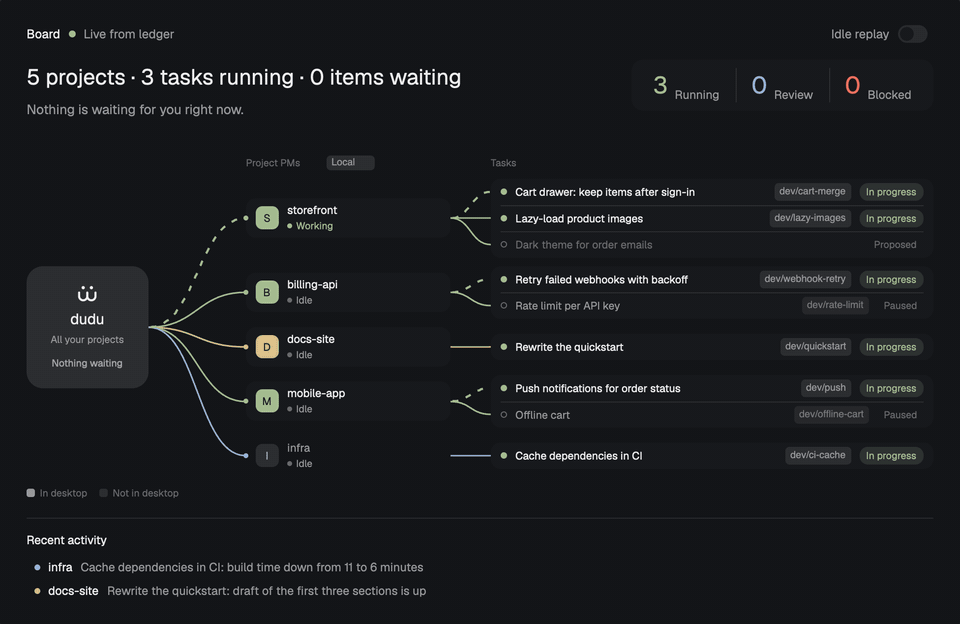
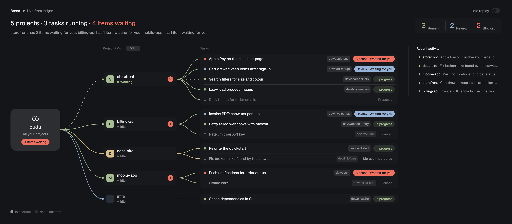

For the Herdr desktop app · MIT
Manage all your coding agents from one session.
Tell it what you want; it dispatches agents, reviews and merges their work, and shows you only what is waiting for you.
$ git clone https://github.com/catundercar/dudu.git && cd dudu && ./install.sh

One session that keeps the whole picture
For each project, one agent session acts as its manager. It hands out the work, checks what comes back, and keeps a task ledger that survives restarts.
-
Every project at a glance
A board shows every project and task: what is running, what is in review, what is waiting for you. Progress is kept in a ledger, visible across projects and machines.
-
Open a project, talk to it
A project opens as one conversation with its manager: what you said, its replies, each task as a thread where it started, and its questions as cards with answers to pick.
-
Dispatch, review, merge
It hands tasks to coding agents in their own worktrees, reviews what they bring back, and merges it. You step in only where a decision is yours.
-
Any coding agent
Any coding agent can manage a project or work on its tasks. Claude Code and Codex are tested; pi, Gemini CLI, opencode and others can be configured.

Install
Choose either path. Both copy the skill into each coding agent they find and add its hooks.
From herdr.dev
Add the layout from the Herdr layout directory, open Board, then click Set up. No checkout needed.
From the repository
Clone it and run the installer from its root:
git clone https://github.com/catundercar/dudu.git cd dudu ./install.sh
- Herdr desktop app
- A coding agent CLI
- Python 3
- Git
Then restart your agent sessions, open one in your project inside Herdr, and ask it to manage the project. The guide covers getting started, configuration and uninstalling.